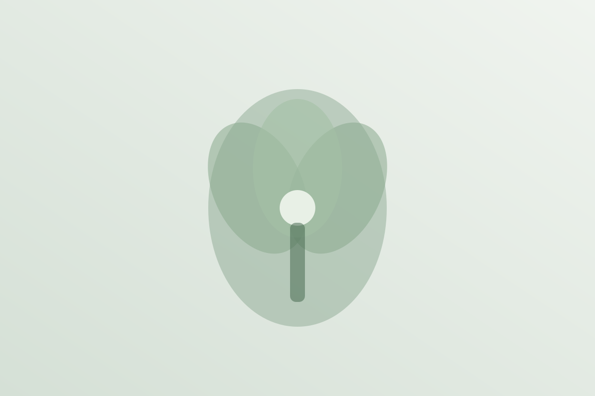

Background
背景と想い
生産者と花店の縮小が進むなか、コスト高や酷暑、台風の増加といった変化も重なっています。87appは、5年後を見据えて2025年から構想をまとめ、自ら開発したサービスです。
生産者の現状を守るには、小売店の存在が不可欠です。一部の大型店舗やアプリ内販売だけでは足りません。年間を通じて、多くの地域の品目・品種が全国で同時に扱われること——それが業界の課題に向き合う鍵だと考えています。
そのためには、全国の小売花店やフラワーレッスンスクールの力が必要です。
Vision
目指す姿
1,000店舗超
毎月、多くの花を扱う店舗が全国に広がれば、業界は現状を維持しながら未来へ進むことができます。ただし維持だけでは世代交代も、新しい景色も見えません。
まずはアプリを軌道に乗せ、アップデートとイベントを重ね、全国の花好きの皆さまへ還元していく——それが87appの目指す道です。
Service
基本的なサービス
お客様ができるだけ様々なお花屋さんを知り、花を購入し、飾る喜びを感じられる流れをつくります。さらに上手くいけたいと思ったら、近くのレッスンを探して体験する——そんな循環を想定しています。
地図 店舗案内 決済 ポイント還元 地図

-
買う前も、買ったあともサポート
AI検索で予算感を画像から調べたり、注文の仕方や花言葉、購入後の管理・病気の症状まで、花屋さんに行く前後で役立つ情報に触れられます。
-
購入金額の5％がポイント還元
次回以降の購入に使えるため、普段手が届きにくい花や、毎週の花飾りのきっかけになります。結果として、お花のロスを減らすことにもつながります。
-
夏でも、近くから届く新鮮な花
スタンプラリーなどで来店のきっかけをつくり、地図のおかげで遠方配送も近くの花店から届けられます。常に新鮮な花と、アフターサービスを受けられる環境を目指しています。

昔あった、お客様とお花屋さんのつながりが戻り、夏場でも花を贈る気持ちが自然に生まれること——それが願いです。
Timeline
スケジュール
無料での店舗登録はすでに開始しています。自宅花屋さん以外で小売をされている方は、全国どの地域の方も歓迎です。
-
現在
店舗の無料登録を受付中
-
2027年1月
テスト運用を開始し、修正を重ねながら半年継続
-
2027年夏
本格的な活動へ